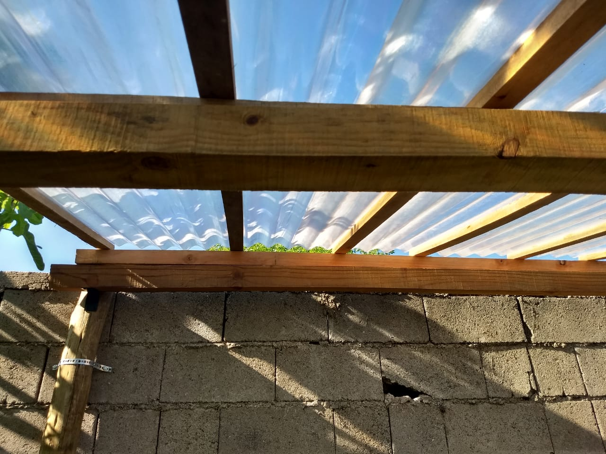
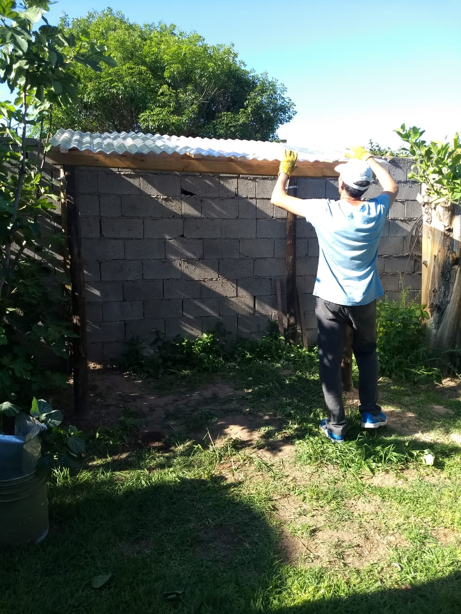
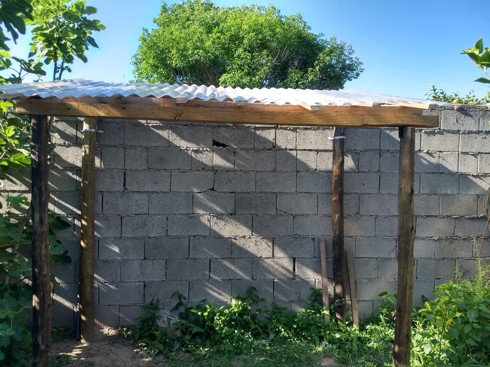

A continuación te presentamos un invernadero con botellas hecho en Córdoba Capital. La recolección de botellas llevó mas un año. Este es el consumo de 1 o 2 botellas de plástico por fin de semana que generó una familia de 4 integrantes a lo largo de un año aproximadamente mas las botellas que donaron algunos vecinos.
;;
}